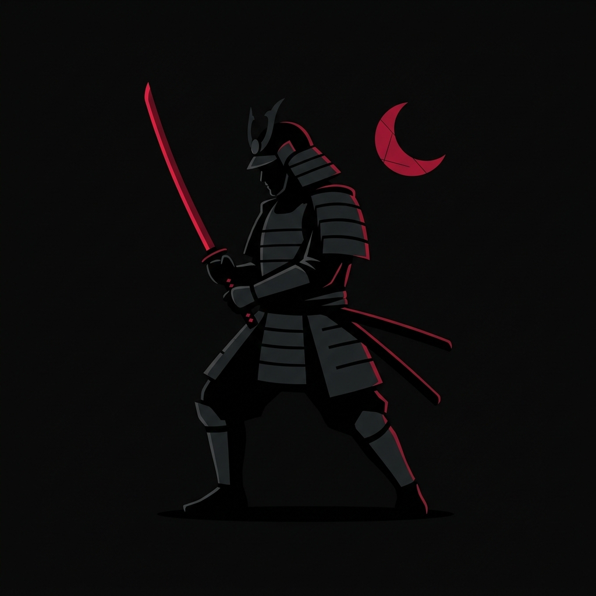

Forged in Discipline
Katana Traffic was born from a singular vision: to bring the discipline and precision of the samurai to the chaotic world of digital traffic management.
We saw an industry plagued by inefficiency, fraud, and wasted resources. Our founders, veterans of high-stakes digital campaigns, decided to craft a solution that cuts away the non-essential.
Today, our algorithms strike with unmatched speed and accuracy, delivering pristine traffic to the most demanding brands across the globe.
The Path of the Blade
Analyze the Battlefield
We observe your current traffic flows, identify vulnerabilities, and map out the optimal attack vectors to maximize your ROI.
Deploy Countermeasures
Our proprietary filters are activated. Bots, scrapers, and bad actors are blocked before they ever touch your infrastructure.
Unleash Targeted Traffic
The floodgates open. High-converting, precisely targeted users are directed to your landing pages with zero latency.
Continuous Refinement
The battle never truly ends. We continuously analyze performance data to sharpen our algorithms for the next engagement.